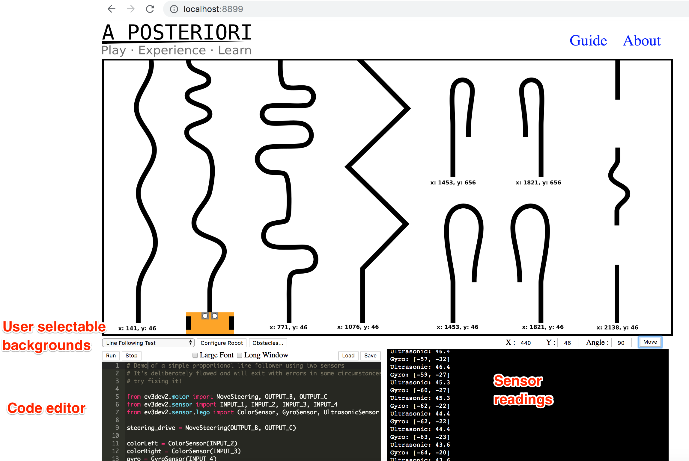
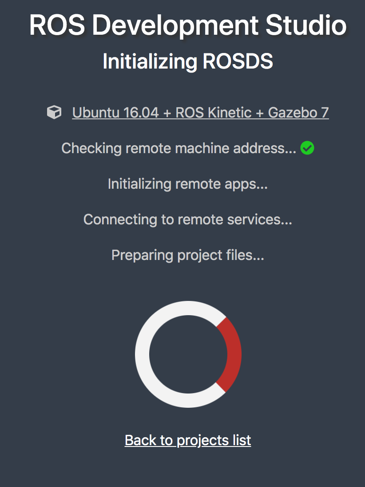

Robot Simulators¶
Notes on the availability of robot simulators that might be appropriate for revised activities in the TM129 Robotics block.
A key consideration are the learning objectives surrounding that we require the practical activities to meet.
Currently (up to and including 19J), TM129 Robotics block practical activities cover teaching elementary programming in the context of a simple 2D simulator, and training a simple neural network via an application with a graphical user interface.
More generally, learning objectives for the update might include, but not be limited to:
teaching basic programming in general;
teaching some principles of robot programming;
demonstrating how simulations can be used to design and test robot control programmes;
limitations of simulation compared to real world operation;
an example of how virtualisation can be used to support the distribution of, or access to, complex or resource hungry software environments.
With proposed updates to the TM129 Robotics block also suggesting an increased coverage of various AI related topics, potentially including smart systems and conversational agents, we might also be tempted to include:
teaching basic programming around smart devices and smart sensors;
teching basic programming around conversational interactions (eg chatbots, smart speaker skills).
Strategic concerns¶
If other modules across the OU, such as in the Engineering programme, are likely to require the use of a physical world simulator, then it might make sense for TM129 to pick a simulator that would be appropriate for use in such courses.
This would allow OU educators and developers to gain familiarity in use of the simulator and its deployment. Use across several modules also provides support for developing OU customisations (branding, improving student experience, etc).
Deployment Concerns¶
Making software applications available to OU students, who work at a distance on computers outside of our control, is often challenging.
The OU policy is that students should have a minimum specification computer (which is set at a very low spacification) and minimum version operating system (which may be very old, and even past its support date) although which operating system is left open; students could use Windows, Mac O/S, Linux, so cross-platform support is required.
The computer specification does not admit of tablets, phones or netbooks/Chromebooks, although increasingly these may be the only computer the student has access to (in particular, netbooks/Chromebooks).
Selecting software that runs an HTML over HTTP user interface means that the student only requires a web browser to run software, although some clients may specify particular browsers (such as a recent version of Chrome or Firefox). Desktop applications without an HTML UI can also be accessed via a browser using no-vnc or XPRA web-browser clients, or via cross-platform RDP clients.
Cross-platform support can conveniently be provided using virtualised applications (OU modules have distributed software to students using both VirtualBox virtual machines and Docker containers) to allow offline running of module software and local file persistence. This has the advantage that the same application software and software environment is provided to all students.
Some robot simulators are resource intensive, requiring large amounts of memory, particular graphics cards, or GPUs. Application image sizes may also be large, particularly for virtualised applications, requiring a large amount of free disk space prior to installation. (Experience suggests that some students have very little free disk space on their computers.)
Virtualised environments can be made available to students remotely as well as locally on their own machine (the same environment applying inseide the VM in each case). Whilst this does require students to have an internet connection to the remote application server, their computer only needs to support an internet browser (which means activities could also be completed using netbooks, tablets, or even phones). Challenges to the OU of providing remote access include managing multi-user access and authentication, student personal file persistence and peak load resource provisioning.
TM112 has recently experimented with hosting a scaleable multi-user JupyterHub service accessed via a VLE module website to deliver a temporary Jupyter notebook activity to students. Students can run activities during a single online session but not save those activities to return to them later. It is quite possible to configure the JupyterHub server to provide persistent student accounts, although this requires additional storage resource. [Currently, there is no precedent for this mode of operation within the OU although many other institutions do offer this sort of personalised service.] The TM112 JupyterHub service serves a potentially user-selectable container instance to a connected user via a scaleable Kubernetes backend. As well as running a Jupyter notebook server UI, the notebook server can proxy other HTTP/HTML user interfaces (for example, running RStudio via a proxy), including remote desktops exposed via no-vnc (for example, jupyter-desktop). JupyterHub can thus be used to provide authenticated multi-user access to arbitrary, personal, containerised applications other than Jupyter notebooks, albeit proxied by the personal notebook server running in the container.
Content Authoring and Student Ownership¶
As well as issues associated with distributing software to students in general, we should also consider how we both author the instructional material associated with software activities and deliver it as instructional material to students.
The traditional OU model is to produce instructional material for delivery as print material or via the VLE. That material is typically authored in Microsoft Word, converted to OU-XML, then rendered to PDF/print or HTML for the VLE.
One advantage of the print material route for students is that can keep a copy of the material forever (or resell it!), another is that they can take ownership of the material by annotating it.
Whilst academic instructional material associated with TM351 was pubished as VLE based instrictional material, the content associated with practical activities (data management and analysis using Python) was delivered as narrative style Jupyter notebooks embedding practical code activities inline.
Jupyter notebooks were downloaded by students from the VLE, at which point they took ownership of them in two senses:
by running the notebooks in a virtual machine on their own computer;
by being able to edit and save changes to the notebooks (i.e. to annotate them).
As well as running Jupyter notebooks as notebooks, publishing mechanisms also exist for publishing HTML pages that can execute inline code against a remote server. An example can be seen here: executing inline code in an HTML page against a remote server.
This means that “static interactive” materials could be delivered to students via the VLE that would allow them to run exercises within the VLE HTML webpage context, change the code and execure it, but not save their code. (The activities thus become “temporary” or ephemeral.)
When it comes to authoring such material, there are several options:
Authoring in Jupyter notebooks using the Jupyter notebook user interface;
Authoring in markdown and using Jupytext to convert the materials into the Jupyter notebook format as well as allowing the markdown to be edited within a Jupyter notebook environment;
Authoring notebooks using an alternative notebook editor, such as Polynote (which has a friendly WYSIWYG text editing enviroment).
TM129 was always claimed to provide a module format that would support innovation and updating over short timescales, with potentially hot swappable 10 point blocks that could be rapidly updated and replaced, an opportunity was squandered right from the start. With the update to the robotics block, we do have an opportunity to explore new production, delivery workflows and potentially even pedagogical styles, in the context of producing and delivering interactive practical activity course materials.
I have also argued previously that there are opportunities for separate blocks to scaffold each other, for example in the context of virtualisation, where one block could look at the rationale for and implementation of virtualised services, with another block using virtualisation to deliver one or more services in contexts that demonstrate why virtualisation is appropriate. For example, we could deliver a light docker environment to students running a simple Python simulator whilst also giving them a limited experience of a fully featured simulator running on a powerful, GPU enabled remote server.
Providing students with some practical experience in setting up and running virtualised services could simplify a lot of our software delivery issues and enable students to run a wider range of services for themselves both inside and outside the OU. The blockers to OU adoption come from IT and LTI, who won’t engage in looking for strategic ways to deliver virtualised services and benefit from them and from academics, who have no idea what virtualisation is or why it might be useful, let alone how we might go about making use of it. Finance would also probably have something to say about paying for any remote hosting, but it would then be down to us to demonstrate that it would generate effiencies elsewhere, eg in terms of production, maintenance and support and improved retention, and intangibles like a better student experience and improved opportunities for developing engaging and meaningful interactive activities.
Each module arguing separately for support for virtualised services means we are already divided and con quered. We need a strategic institutional play. But in absence of that, as separate modules, we can try to set precendents and can try to obtain jigsaw pieces that may be of benefit to other modules. We have to finagle a strategy from tactics.
TM129 Practicals, <= 19J¶
TM129 provides practical experience in simple robot programming using the RobotLab 2D simulator, originally developed for T184.
The RobotLab simulator provides a text based drag and drop or click-to-insert interface that allows syntactically correct text programmes to be developed through interactions with a text command palette.

Programmes are used to control a simple differential drive robot, with trace, in a graphical 2D simulator. Programmes may be run to completion or stepped through a line at a time.
As well as providing a simple simulation environment, RobotLab could also control a physical Lego robot via the Lego Mindstorms RCX brick, providing students who had access to such a robot with the ability to run their programs in both the provided simulator and on their own robot.
RobotLab was originally built as a Windows desktop application. Cross-platform support is currently provided using PlayOnMac and Wine runtimes. Experimental support for virtualised distribution locally or via a remote websrvice has also been explored.
A simple graphical neural network application, Neural, originally developed as a Windows application for a module prior even to T184, is also currently used on TM129. Neural provides a graphical user interface for training simple, customisable neural networks.
Updating TM129 Practical Activities¶
The proposed revisions to TM129 place an increased emphasis on AI and modern machine learning architectures. Trends in robotics research and development also demonstrate increased reliance on the use of powerful simulations during the development and testing of robotic systems.
RobotLab has aged well as a simple and effective instructional programming environment in terms of its user interface design. However, providing ongoing support of this 20 year old application is increasingly an issue, although virtualised offerings might be able mitigate against student software installation issues.
The planned revision of TM129 provides an opportunity to overhaul the practical activities in the robotics module. There are several avenues we might explore when choosing applications or environments to replace the original RobotLab and Neural applications:
demonstrating the use of powerful 3D simulators that might be used in other modules in the engineering and science qualification pathways, including project modules and Masters level modules;
demonstrating the remote hosting and delivery to students of web applications with computing requirements that exceed the OU minimum specification computing requirements (for example, in terms of memory, GPU requirement, etc). (The in-production module TM358 Machine Learning is likely to have a GPU requirement for training deep learning models.)
using open source environments that are used in other modules and as such contribute additional development and support focussed resource into any required necessary customisations, particularly on grounds of accessibility, branding, etc.
Note that when considering environments, we require three components:
A
programming environmentfor programming simulated robots;A
programming languagethat can be used within theprogramming environmentand that can control simulated robots in thesimulation environment;A
simulation environmentfor visualising the effect of programmed control of simulated robots.
In some cases, the same application may meet all three requirements in a tightly coupled / integrated way. In others, it may be possible to decouple the programming environment and language from the simulation environment, or loosely embed a simulation environment within the context of the programming environment.
If the module revisions extends to practical activities that include programming conversational agents, it would be useful same programing environment could be used to programme the robot simulator as well as the conversational agents.
Software Applications - General Criteria¶
The simulators and development environments were identified on the basis of web searches for applications that meet one or more of the following criteria:
open source [
REQUIRED]Python code base [
DESIRABLE]browser based UI (supports web delivery) [
DESIRABLE]cross-platform support (for software distributed to students, this is [
REQUIRED]; for software delivered remotely via a web UI or RDP, this is [OPTIONAL])runs on OU min spec computers (for software distributed to students, this is [
REQUIRED]; for software delivered remotely via a web UI or RDP, this is [OPTIONAL])interoperable simulator and programming environments [
REQUIRED]support for simulated robot models that correspond to real world robots that could be controlled directly in the real world rather than just in the simulator [
DESIRABLE]support for simulated models of Lego EV3 (as used in OU residential school activities) and Baxter robots (as available in the Remote STEM Lab) [
DESIRABLE]
Suggestions regarding other openly available programming environments and simulators are welcome.
Robot Simulators Review¶
The following (brief) review is not necessarily comprehensive.
Suggestions for alternative applications / environments are welcome.
Python Turtle / ipyturtle¶
The Python programming language comes with an implementation of a 2D turtle, often used to teach elementary programming. (Indeed, a python turtle is used to introduce Python programming in TM112.)
The native Python turtle runs in a pop-up Tk window although python packages to provide a turtle canvas in Jupyter notebooks (ipython-turtle-widget) and JupyterLab (jupyterlab-turtlegraphics, although not (yet?) supported for recent versions of JupyterLab).

A demo script for the ipyturtle widget can be found here and tried here: 
Whilst turtles can be used to teach simple open loop styling programming, there is no sensory feedback so sensor mediated closed loop control within a simulated environment is not possible.
However, a turtle environment may be appropriate as an engagement tool for TM129, introducing students to the idea of controlling a turtle through simple motor commands and then teasing: “but what if the turtle could also sense its environment and act accordingly?”
Open RobertaLab¶
Open RobertaLab is a blocky style graphical interface that can be used to programme several robot types and simple electronics development boards. An in-built 2D simulator is provided for some of the robot models, including the Lego EV3.
Open RobertaLab is accessed via a web browser and runs as an online hosted environment. You can try Open RobertaLab online here.
There is the ability to look at Python script generated from the blocks view, although not edit it.
Available sensor types in the RoboSim (EV3basis) include a touch sensor, ultrasound (distance) sensor, colour sensor, infrared sensor (distance, presence), gyroscope and timer. Sensor types and motors are configurable.

Several simulator environments are provided as default, and custom simulator environments can be created, Environments can include coloured traces on the simulator floor and objects in the plane of the robot sensors that are sensed by the ultrasound sensor, for example.

The code is openly licensed [repo] and could be hosted institutionally, or students could download it and run it themselves, for example via a containerised application.
You can try it out here: Open Roberta Lab online.
You can run a local version of Open RobertaLab under Docker using the following command:
docker run --rm -d -p 1999:1999 --name robertalab_demo ousefuldemos/robertalab
The service will be available on localhost:1999.
An OU fork of the blockly style Scratch environment (OU Build) is already being used in one of the new first level courses to introduce basic programming, so the blocks style environment is one that students will see elsewhere, albeit in a rather simplistic fashion.
Advantages: simple 2D simulator has much of the feel of RobotLearn; converting current RobotLab activities to Open Roberta Lab activities should in large part be possible; browser based; more senosrs available for use in simulator than RobotLab.
Disadvantages: accessibility may be an issue; blocks editor does not allow text-based programming / editing, although inpsection of autmoatically generated equivalent code is possible.
As well as the simple robot programming environment, Open Roberta Lab can be used to programme some simple development boards, such as an Arduino, Senseboard or BOB3 board, directly, or as with the Microbit, directly or in simulation.
Key Considerations: cross-platform local delivery possible via Docker container;
TO CHECK: can you code step through code one block at a time? Is there a data logger / data display? Can the service be proxied through jupyter-server-proxy? If so, multi-user access via VLE auth and JupyterHub would be possible.
¶
iRobot Robot Simulator: blockly style editor and simple 2D Root robot simulator [IEEE Spectrum review].
Advantages: simple 2D simulator;
Disadvantages: geared to kids.
Jyro¶
Jyro (docs, code) is a simple 2D robot simulator, with a 3D camera view, created by Doug Blank whilst at Bryn Mawr College, implemented in Python. Jyro is desgined to work within Jupyter notebooks (although not currently in JupyterLab).
The base simulated robot is based on a Pioneer differential drive robot. It can be configured with ultrasound sensors around the robot, a forward facing camera and forward facing light sensors.
A gripper can also be attached to the robot, and a class exists to define a puck that can presumably be collected by the robot, but I haven’t yet managed to find a demo of this working or create one myself.
The world is defined as a wall bounded square area with user-defined floow and wall coours, containing user defined coloured boxes of arbitrary size.
Lines and other coloured markers cannot be placed on the floor of the simulator (this would presumably complicate the robot’s camera view of the world), nor is there currently support for a downward facing light sensor. It might be possible to contive a downward facing light sensor that can be seen in the plan view of the world, and from a downward facing light sensor, but mask this from the 3D camera view.
When a control programme is associated with the .brain of the robot and the simulator play button pressed, the simulator loop runs and the robot behaves in accord with its programmed actions.
The following programme fragment demonstrates a simple control programme with data logging into a pandas dataframe enabled. The simulator runs in its own control loop inside a widget, with the robot’s state mirrored in the notebook kernel. This means that robot sensor data can be collected from the simulator widget and displayed within the notebook, even as the simulator is running.
import pandas as pd
df_log = pd.DataFrame()
def avoidObstacleLogged(robot):
""" Turn right if there's an obstacle close ahead, else go straight. """
global df_log
sonars = robot["sonar"].getData()
front = min(sonars[1:7])
if front < 0.5: # check for an obstacle
robot.move(0.0, -1.0) # stop and turn right
df_log = df_log.append({'dist':front, 'action':'turn'}, ignore_index=True, sort=True)
else:
robot.move(1.0, 0) # otherwise go straight
df_log = df_log.append({'dist':front, 'action':'straight'}, ignore_index=True, sort=True)
robot.brain = avoidObstacleLogged
It would be useful to explore the extent to which a straming dataframes and/or streaming charts mught be able to display sensor data in real time as it runs.
Another avenue to explore would be the use of Voilà style dashboards to display simulator and live telemetry chart views over predefined worlds and robot control programs.
A “headless” simulator is also available for running multiple experiments in the same world in order to collect data.
A demo script for the Jyro simulator can be found here and tried here: 
Advantages: Python, visual simulator, good Jupyter notebook integration, user-definable world, configurable robot with useful sensors, simple world physics, datalogging ability.
Disadvantages: can lose sight of visual simulator when scrolling notebook; no floor marks or sensing of floor marks; default .move semantics take some thinking about when applied together. No code stepper (not sure how that would/could be managed?)
To explore: potential for mutlirobot and/or puck moving activities? Streaming data log charts? Getting the robot to speak.
[Jyro] Robot Simulator in Java / Processing¶
A port (I think?) of the Jyro simulator to Java / Processing, again by Doug Blank (via an example here).
The simulator works in a Jupyter notebook running a processing kernel.
As with Jyro, worlds can be configured and rendered in a notebook output cell. Once again, a plan view and a robot’s POV are displayed in the simulator.
A text area display within the simulator view can be scripted via the robot definition.
The robot is programmed by subclassing a Robot class and adding a brain():
class MyRobot extends Robot {
MyRobot(float x, float y, float r) {
super(x, y, r);
this.state = "start turn left";
}
void brain() {
PImage pic = this.takePicture();
// Show pic on canvas:
image(pic, 500 - 256, 250);
fill(0);
text("getIR(0): " + nf(this.getIR(0), 1, 4), 0, 265);
text("getIR(1): " + nf(this.getIR(1), 1, 4), 0, 280);
text("stalled: " + this.stalled, 0, 295);
text("state: " + this.state, 0, 310);
text("time: " + this.time, 0, 325);
// brain:
float speed = 3.0;
if (this.state == "backward") {
if (this.stalled) {
this.state = "forward";
this.forward(speed);
} else {
this.backward(speed);
}
} else if (this.state == "forward") {
if (this.stalled) {
this.state = "backward";
this.backward(speed);
} else {
this.forward(speed);
}
} else if (this.state == "start turn left") {
this.time = 62;
this.state = "turn left";
} else if (this.state == "turn left") {
if (this.time < 0) {
this.turn(0);
this.state = "forward";
} else {
this.turn(.05);
this.time -= 1;
}
} else if (this.state == "turn right") {
this.turn(-.05);
} else if (this.state == "stop") {
//this.stop();
}
}
}
The move command semantics resemble those of Jyro (forward/backward translation and a turn component) although managed slightly differently in example programmes by specifying a natual language move state and then implementing motion commands via .forward(), .backward() and .turn() methods.
Advantages: runs in a Jupyter notebook with an appropriate kernel; the simulator feels a bit more fluid in the way it renders the world than the original Jyro simulator. The availability of processing means that extending graphics / animation features is probably ripe for possibilities.
Disadvantages: Java…
A demo script for the Java/Processing port of the Jyro simulator can be found here and tried here: 
Ev3devSim¶
Ev3devSim [repo] is a purely browser based simulator that can be run using a local webserver.

Try out a live demo here.
The application can also be run within MyBinder proxied via jupyer-server-proxy [demo to follow…].
Colour, gyro and ultrasonic sensors are available, with two colour sensors mounted by default at the front of the simualted robot. The motors are either independently controlled or ganged (moveTank, moveSteering) and are either running at a specified percentage level or they are stopped. When motors are turned off, the robot stops instantly.
Advantages: purely browser based; custom commands can be added via Skulpt parser somehow?
Disadvantages: limited instructional commands? [I haven’t made a chance / time to ry out some of the activities yet…]
To explore: the developers of another blockly style environment, BlockPy, are currently developing an editor, BlockMirror that provides “[a]n interface for dual block/text representation with Blockly”. The BlockMirror editor embeds the Skulpt parser (as does Ev3devSim) and allows the user to toggle between block and code views: editing one view is reflected by changes to the other. I wonder how easy it would be to use BlockMirror as the editor within Ev3devSim? (I have filed an issue to the original ev3dev-sim repo related to this.) It should be easy enough to package Ev3devSim for cross-platform use as an electron application. I also wonder about how easy it would be to separate out the components of ev3dev-sim and run it inside a Jupyter notebook (or JupyterLab) using a Skulpt kernel. Something else that might be worth exploring is whether the simulator could be integrated into BlockPy, allowing that environment to be used for blocks or text based programming in a data or robotics context; the robotics simulator might also provide data for visualising/analysing in the data science context? [Here’s a related issue.]
????Maybe also https://github.com/ev3dev/ev3dev-lang-python/issues/264#issuecomment-530658432
Webots¶
Webots [repo] is an open-source, cross-platform robot programming and simulation environment offering “accurate physics” and a range of robot models.
Simulators can be complex, although running them can requier a lot of compute resource and crash your computer if note available.
Lots of other simulations are also provided, including quite simple ones.
Several langauages are supported — C, Python, Java, as well as ROS (though the latter make take some setting up on Windows?).

Webots is also available via an online simulator published via the robotbenchmark robot challenge website. (Similar environments can be self-hosted.
Challenge tasks can be attempted without logging in, or a personal account can be created and then used to enter challenges competitively.
The online / web-streamed robotbenchmark environment provides a browser based environment giving the simulator view, a pop-up information box defining the task at hand and providing limitied instruction, a terminal view and a simple text editor that can be used to add programmatic control to the corresponding simulated robot.
A wide range of pre-defined challenges are available on the Robotbenchmark website.
It also looks like it should be possible to control a robot in a Webots simulation from a Jupyter notebook [early example?].
Documentation examples show how Webots can be controlled from VSCode (C/C++) and PyCharm (python. The VSCode Python extension now supports Jupyter notebooks, so it would be interesting to explore controlling the Webots simulator from a notebook in VSCode. The PyCharm example might also provide clues as to how to get started controlling Webots from a Jupyter notebook directly. Might a Webots Jupyter kernel also make sense, based either on a Python kernel, or a C kernel?
Advantages: cross platfrom simulator with a wide range of simulated robot models and world components. Robots can be rpogrammed using a variety of languages, including Python. A streaming web-based environment is available, although the UI differs from the desktop one.
Disadvantages: Complex simulations can clobber your machine.
To explore: how easy is it to set up the web streaming server? How easy is is to create custom challenges within it? Is a similar inrstruction / information box available in the desktop application?
V-REP¶
V-REP is a fully featured, cross-platform 3D simulator developed by Coppelia Robotics.
The VREP simulator comes with a wide range of simulated robot models, from mobile robots to robot arms. A Baxter robot model is also available.
Simulated robots can be programmed natively within the VREP environment using Lua scripts. However, a Python API is also available which allows robots to be scripted using Python code. A ROS interface for programming VREP simulated robots using ROS is also available [although I haven’t tried it…]
A set of example materials were produced as part of a previous TM129 update scoping activity and can be found here: ou-robotics-vrep. A VirtualBox virtual machine demo is also available.
In the ou-robotics-vrep demo, the simulator is packaged along with a Jupyter notebook server inside a Virtualbox virtual machine. The simulator runs on the VM desktop and controlled via Python programs running inside Jupyer notebooks, access via a browser on host.

THe VREP simulator can be instrumented within a world scene, or via code. Real time telemetry charts live logged showing sensor readings can be displayed in-world.

Telemetry data can also be captured into a Jupyter notebook used to control the simulator and and robot operating within it.

Further context is available in a series of blog posts produced at the time, for example here, here and here.
Advantages: VREP is a fully featured simulator offering a wide range of robot models. A Python API, as well as a ROS interface, are available.
Disadvantages: VREP can be resource hungry and the installation path can be tricky, particular if the programming environment needs to be interfaced with it; this can be simplified by distributing the whole environment via a virtual machine, although performance of the vitualised simulator compared to running it as a native host desktop application may be impaired. [I don’t remember if I tried to run it on a powerful server access via RDP? If using RDP, the notebook server could be accessed via a browser installed on the virtual desktop, or as a headless service exposed via another http port.]
ROS¶
ROS, the Robot Operating System, is widely used for controlling a wide range of research (and industry?) robot platforms. It offers a native Python API.
[I have not tested any ROS tools mentioned here unless otherwise stated.]
ROS is part of an ecosystem of tools including the ROS programming APIs and the Gazebo robot simulator. Gazebo also has a web client, Gzweb (gz3d). Several 2D simulators are also available including the official STDR (simple two dimensional robot?) simulator and the community provided flatland.

ROS APIs are also supported by other simulators including V-REP and Webots.
RViz and the recently released webviz provide support for visualising ROS robot sensor data via a desktop client and the browser respectively.
jupyter-ros is a relatively recent JupyterLab extension, currently under development, that aims to provide a range of interactive widgets for visualising ROS environments and robot data. (I wonder if it will integrate webviz at some point?)
Despite being under active development for several years, getting a working ROS environment up and running on a cross-platform basis still seems to be a difficult undertaking.
The simplest approach would be via a Docker or Virtualbox distribution (I thought I had a Vagrantfile somewhere for building a Virtualbox image, but can’t seem to find it :-(
The image sizes can be very large (several GB download) and I assume that resource requirements for running ROS and the Gazebo simulator are such that OU min spec machines might struggle.
An example environment showing integrated contrpl of a Gzweb simulated robot using code running in a Jupyter notebook can be found via the public simulation sandbox for Shadow’s Smart Grasping System smart_grasping_sandbox. With docker installed, run:
docker run -it --rm --name sgsdemo -p 8080:8080 -p 8081:8888 -p 7681:7681 shadowrobot/
The Jupyter notebook is served on localhost:8081 and Gzweb on localhost:8080. (A cloud9 editor can also be exposed, mapped from port 8181 inside the container; this could be removed from the image to reduce image size. I donlt recall offhabd what port 7681 was and donlt fancy waiting for the 6+GB image to download again…)
A simpler, much lighter approach, without the Gazebo/Gzweb simulator is taken in RobInLabUJI/ROS-Tutorials, a set of simple tutorials for getting started with ROS using a 2D simulated turtle. You can try it out here: 
It runs okay in Binder, which is akin to an OU min spec machine, so that’s a possibility. [I got jupyter-ros to install though couldn’t build the labexetension (no nodejs), which is I’m guessing why I could load the package but not see any ros3d widgets?]
See also their mininal ROSOnline (runs in Binder) demo. A tool for creating custom Dockerfiles for building ROS environments is also available.
The same group also appear to have a set of demos that include using notebooks to control Webots simulations using ROS: try-a-bot, from eg this set-up: example]. Frustratingly, there doesn’t look to be the setup for a Docker container or virtual machine image?
There looks to be a simple Gzweb container here: DukeRobotics/gzweb-rosssh. It might be worth forking the RobInLabUJI/ROS-Tutorials repo to see if we could add in Gazebo/Gzweb and then connect to and control a scene in it?
Poking around a bit more, this container — devrt/ros-devcontainer-vscode — seems to include ROS and Gazebo/Gzweb. VSCode can be connected to the container, or a provided docker-compose script will launch the ROS container and an appropriately configured and connected browser based Theia editor.
Another, more advanced set of examples can be found via this ROSDev 2019 presentation describing a couple of simulated robots playing chess. A more complete statement of the exercise can be found here and I think this may be the associated repo.
Advantages: robot researchers seem to like ROS; it’s Python; a 2D sim and ROS server can run in a notebook on MyBinder.
Disadvantages: lots of the demos are huge, and either broken or seem require mad sysdev skills to get working. The current on-ramp is appalling, although RobInLabUJI/ROS-Tutorials is quite a gentle way in. The ROS architecture takes a certain amount of explaining, which may get in the way of teaching elementary programming unless we add a lot of magic support (which also means identifying some sensible magic to create).
Robot Development Studio¶
The ROS Robot Development Studio (RDS) is an online educational environment for running Jupyter notebook programmed ROS based simulations visualised using Gzweb. A free plan offers several simple tutorials with minimal compute resource with an upsell business model that allows regsitered users to enable more resource (more processor memory and processor cores, or GPUs for example.
Creating a project allows you to select a Linux O/S and version of Gazebo and a container is launched on that basis:

You can construct a simulation from a set of predefined worlds and robot models:
The development environment itself is a browser based desktop / workbench within which you can view the simulator, a Jupyter notebook, an IDE (which didnlt load for me) and a terminal:
On the free plan, having the simulator window open pretty much clobbered everything for me.
Advantages: the web based environment provides a range of integrated tools that can be used to programme a simulated robot. Coneectors are available so that you can run programmes within the environment against you own, network connected real robots.
Disadvantages: didn’t work for me under the free plan; not open source so no immediate way of running a self-hosted version free of any license fee, if at all.
Simple Hexapod Simulator¶
Hexapod simulator, viewed in browser via plotly dash, py/numpy on the back end: play with joint angles etc…
Simple Robot Arm Demos¶
A very simple js / browser based demo of setting robot arm joint angles can be found at jaekookang/robot-arm-simple. A much richer arm simulator using three.js is available at glumb/robot-gui [demo and video].
Gym Toolkit¶
Gym “is a toolkit for developing and comparing reinforcement learning algorithms”. It includes several robot simulations that frame different reinforcement learning challenges, including a pick and place task and a robot hand manipulation task.
A Masters project notebook seems to offer Gym like activities using a Webots environment (maybe?!)? The environmental set-up can be found here [I haven’t tried this yet]. This is related: krock docker.
Customising / Forking a Current Environment or Creating a New Bespoke One¶
An earlier attempt at updating TM129 robotics module commissioned the development of a webservice mediated application with a UI resembling the original RobotLab UI, although I donlt believe this was delivered.
BlockPy does not embed an animated stage canvas (unlike Scratch / OU Build) but it does provide a canvas for display statistical charts. (The motivation for BlockPy programmes is data analysis rather than animation.) Extending BlockPy to include an animaation stage / simulator would open up the possibility of using an editro that could toggle between blocks and Python code input and accepts edits made under either view. The underplying BlockPy parser may need extending to support robot sensor and motor control commands, etc.
It may be worth exploring the extent to which BlockMirror could be used to generate code that could be used to control a simulator component decoupled from one of the other packages.
Commercial Platforms¶
ABB Robotics have a simulation environment for their robot platform, but the free trial plan seems limited to 30 days: ABB Robot Studio.
Universal Robots offer a download for URSim, a Linux based simulator that could be run via a virtual machine. [I haven’t tried this yet. A possibly useful Docker container running the simulator behind a Guacamole server offering an browser based UI, as well as support for RDP, is defined here: ahobsonsayers/DockURSim. A possibly useful install script can be found here; I havenlt found a Vagrantfile yet…]
neural replacement¶
We also need a replacement for Neural.exe
Doug Blank again offers perhaps the best bet? https://github.com/Calysto/conx-notebooks https://conx.readthedocs.io/en/latest/